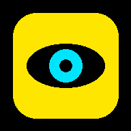

Tap anywhere to start
SmartVision
Hands-free mode: tap anywhere to speak. A helper can tap the green chip at the top right to use the buttons.
Hands-free ON
Smart
Vision
Your AI vision assistant
Camera off
Scanning the path
Obstacle detection is ON
Tap to speak
You said:
—
App said:
Starting…
Calibrate
(2 m)
Repeat
Last message
Back
Not active yet
Far Left
—
Left
—
Ahead
—
Right
—
Far Right
—
Destination
—
—
Stop navigation
Map
Open map
Camera
Live view
More: settings and options
Back
Back
Map
Destination
—
—
Stop navigation
Tap and speak
Back
More options
Stop camera
Go
Alerts: On
Shake to speak: On
Earphone button: On
Voice commands
Save log (CSV)
English